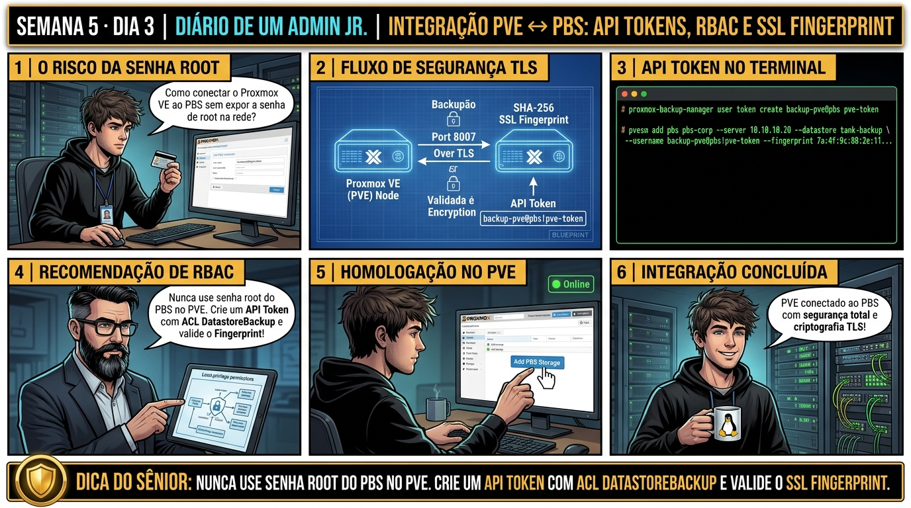

DIARIO DE UM ADMIN JR. | PROXMOX VE & PBS — DA BASE AO CLUSTER
🔗 Conecta com o Dia 2: Você dominou a arquitetura e manutenção interna do PBS. Hoje você realiza a conexão oficial entre o hypervisor Proxmox VE e o PBS: criando usuários de serviço, gerando API Tokens dedicados com privilégio Datastore.Backup e validando o Fingerprint SHA-256 do certificado TLS.
🔓 Privilégio de hoje: Autenticação Segura e Integração de Datacenter. Você gera API Tokens no PBS e adiciona o storage tipo 'pbs' no Proxmox VE via pvesm.
Semana 5 · Dia 3 | Nível Júnior — Proxmox Backup Server & Integração
Integração PVE ↔ PBS: API Tokens, Fingerprints SSL e Storage
Conectando o Proxmox VE ao Backup Server com autenticação segura sem senhas em texto plano
ANTES DE ALTERAR, OBSERVE. DEPOIS DE ALTERAR, VALIDE.

1. O chamado
Você recebeu o chamado #5003: 'A equipe de segurança proibiu o uso da senha de root do PBS na integração com os nós Proxmox VE. É obrigatório criar uma credencial de menor privilégio para automação. O servidor PBS reside no IP 192.168.1.200 com datastore backup-pool. O chamado exige: (1) Criar o usuário de serviço backup-pve@pbs e gerar um API Token (backup-token); (2) Conceder a role estrita DatastoreBackup na ACL do datastore; (3) Extrair o SSL Fingerprint; e (4) Cadastrar o storage no PVE com pvesm add pbs.'
💡 Passa o mouse nas palavras destacadas pra ver uma dica rápida — clica se quiser a explicação completa com analogia.
2. O sênior te conta
🧑🏫 antes dos termos técnicos, a história de hoje
Hoje o Júnior foi conectar o Proxmox VE ao servidor PBS e já ia digitando o usuário root@pam e a senha mestra no formulário de conexão. Parei a mão dele na hora: 'Em infraestrutura profissional, nunca usamos credenciais de root para serviços automatizados!'.
Ensinamos o princípio do menor privilégio: criamos um API Token dedicado (backup-bot@pbs!pve-token) com permissão estrita de DatastoreBackup apenas no datastore de destino. Em seguida, extraímos o Fingerprint SHA-256 do certificado TLS do PBS para fazer o pinning criptográfico da conexão, garantindo que nenhum ataque de Man-in-the-Middle consiga interceptar o tráfego de backup.
Adicionamos o storage no Proxmox VE com pvesm add pbs e o storage ficou verde na hora. O Júnior entendeu que segurança de backup começa na identidade e no isolamento de privilégios.
3. Decodificador de conceitos
Clica em qualquer termo pra ver a definição completa e uma analogia do dia a dia:
4. Ferramentas e leitura da evidência
Comando / Parâmetro
O que observar e por que importa
proxmox-backup-manager cert info | grep Fingerprint
Extrai a impressão digital SHA-256 do certificado TLS do servidor PBS.
Adiciona o storage PBS na infraestrutura do Proxmox VE via CLI.
proxmox-backup-manager user list-tokens USER
Lista os tokens de API ativos vinculados ao usuário de serviço.
# 1. No PBS: Criação de Usuário, Token e ACL de Menor Privilégio
# proxmox-backup-manager user create backup-pve@pbs --comment "PVE Cluster Node"
# proxmox-backup-manager user generate-token backup-pve@pbs pvetoken
┌──────────────┬────────────────────────────────────────────────────────┐
│ tokenid │ backup-pve@pbs!pvetoken │
│ value │ 9e8a7b6c-5d4e-3f2a-1b0c-9a8b7c6d5e4f │
└──────────────┴────────────────────────────────────────────────────────┘
# proxmox-backup-manager acl update /datastore/backup-pool DatastoreBackup \
--auth-id 'backup-pve@pbs!pvetoken'
# 2. No PBS: Extraindo o SSL Fingerprint
# proxmox-backup-manager cert info | grep Fingerprint
Fingerprint (SHA256): 1a:2b:3c:4d:5e:6f:7a:8b:9c:0d:1e:2f:3a:4b:5c:6d:7e:8f:9a:0b:1c:2d:3e:4f:5a:6b:7c:8d:9e:0f
# 3. No Proxmox VE: Adicionando o Storage PBS via CLI
$ pvesm add pbs pbs-storage \
--server 192.168.1.200 \
--datastore backup-pool \
--username 'backup-pve@pbs!pvetoken' \
--password '9e8a7b6c-5d4e-3f2a-1b0c-9a8b7c6d5e4f' \
--fingerprint '1a:2b:3c:4d:5e:6f:7a:8b:9c:0d:1e:2f:3a:4b:5c:6d:7e:8f:9a:0b:1c:2d:3e:4f:5a:6b:7c:8d:9e:0f' \
--prune-backups keep-last=7
5. Laboratório guiado — pegue na mão, comando por comando
🛡️ Onde executar: Terminal do servidor Proxmox Backup Server (root@pbs:~#) e terminal do Proxmox VE (root@pve:~#).
Segurança: Execute as alterações em datastores de laboratório ou teste. Não altere parâmetros de servidores de produção sem janela homologada.
Ação: Crie um API Token dedicado no PBS com permissão restrita DatastoreBackup.
proxmox-backup-manager user token add backup-bot@pbs pve-token --expire 0
Resultado esperado: Token ID e Secret exibidos no terminal.
Por que fizemos isso: Criar um API Token dedicado (ex: backup-bot@pbs!pve-token) no PBS permite autenticação programática sem expor a senha de root do servidor.
Cilada comum: Usar o usuário 'root@pam' com senha mestra para autenticar hypervisors no PBS, violando o princípio do menor privilégio.
Ação: Atribua a ACL de backup exclusiva para o datastore desejado.
Por que fizemos isso: Atribuir a permissão 'DatastoreBackup' restrita apenas ao datastore específico impede que o token acesse ou delete backups de outros setores.
Cilada comum: Dar permissão de 'Admin' global no PBS para tokens de hypervisor, permitindo que um nó comprometido delete backups de outros servidores.
Ação: Extraia o Fingerprint SHA-256 do certificado TLS do PBS.
proxmox-backup-manager cert info | grep Fingerprint
Resultado esperado: Hash hexadecimal de 32 bytes copiado.
Por que fizemos isso: Extrair o Fingerprint SHA-256 do certificado TLS do PBS com cert info permite o pinning criptográfico da conexão no Proxmox VE.
Cilada comum: Conectar o PVE ao PBS sem colar o Fingerprint TLS em redes não confiáveis, abrindo brecha para ataques de Man-in-the-Middle.
Ação: Adicione o storage PBS no Proxmox VE vinculando token e fingerprint.
Por que fizemos isso: O comando pvesm add pbs valida a autenticação por token e fingerprint, ativando o storage de backup no datacenter em segundos.
Cilada comum: Errar a porta de rede do PBS (porta TCP 8007) ao adicionar o storage no PVE, gerando erros de timeout de conexão.
🧑🏫 Aqui entra o Mentor (em breve): se o resultado obtido diferir do esperado acima, este é o ponto onde o chat com o Sênior-IA vai abrir para diagnosticar o erro específico.
Ação: Valide o status ativo do storage PBS no datacenter com pvesm status.
pvesm status
Resultado esperado: Status 'active' confirmando autenticação e telemetria de Terabytes livres.
Por que fizemos isso: Validar a presença do storage com status ativo na interface web conclui a integração segura entre hypervisor e backup server.
Cilada comum: Não testar um backup de teste logo após o pareamento para validar se as permissões de gravação foram concedidas corretamente.
6. Antes de ver as opções — tenta responder
🧠 Recall ativo: Por que é fundamental inserir o 'SSL Fingerprint' ao adicionar um storage Proxmox Backup Server (PBS) no Proxmox VE?
Porque a maioria dos servidores PBS corporativos utiliza certificados TLS autoassinados. Sem o Fingerprint (hash SHA-256 da chave pública do certificado), a conexão TLS seria vulnerável a ataques de interceptação (Man-in-the-Middle - MITM). Com o Fingerprint configurado, o cliente PVE valida se a chave pública do servidor remoto corresponde exatamente aos 32 bytes hexadecimais esperados antes de transmitir qualquer dado de backup.
QUESTÃO 1 de 3
7. Questão comentada — clica numa alternativa
Qual é a sequência exata de comandos no PBS para criar um usuário de serviço, gerar um token de API e conceder a permissão Datastore.Backup no Datastore 'backup-pool'?
💡 Analogia do Sênior para Fixar: A deduplicação do PBS em chunks de 4MB é a biblioteca central: se 100 VMs usam o mesmo Windows, aquele arquivo só é gravado uma única vez no storage.
QUESTÃO 2 de 3 — cenário de erro real
7.1 Erro 403 Forbidden ao tentar iniciar backup do PVE para o PBS
O storage PBS foi adicionado com sucesso no Proxmox VE, mas a primeira tentativa de backup falhou com erro HTTP 403:
INFO: starting new backup job: vzdump 100 --storage pbs-storage
ERROR: Backup of VM 100 failed - backup failed: HTTP error 403 Forbidden: permission check failed on /datastore/backup-pool
Qual foi o erro de configuração cometido pelo administrador no PBS?
💡 Analogia do Sênior para Fixar: O Verify Job do Proxmox Backup Server é o simulado de incêndio: testa a integridade criptográfica de cada snapshot sem precisar ligar as VMs.
QUESTÃO 3 de 3 — detalhe que confunde todo iniciante
7.2 Por que o Proxmox VE armazena o token secret em /etc/pve/priv/storage/ no cluster?
Um analista percebe que a chave/senha do PBS não fica gravada no arquivo legível /etc/pve/storage.cfg:
Por que as senhas e segredos de tokens são isolados em /etc/pve/priv/?
💡 Analogia do Sênior para Fixar: O Live-Restore é o streaming de vídeo: a máquina virtual dá boot em 3 segundos e você já trabalha enquanto o resto do disco baixa em segundo plano.
8. Procedimento profissional
No servidor PBS, crie um usuário de serviço exclusivo no realm @pbs.
Gere um API Token com comentário explicativo e salve o Secret gerado de forma segura.
Aplique a regra de ACL concedendo a role DatastoreBackup (ou DatastoreAdmin se o nó for gerenciar pruning) no caminho do datastore.
Consulte o SSL Fingerprint do PBS executando proxmox-backup-manager cert info.
No Proxmox VE, adicione o storage tipo pbs com pvesm add pbs informando o servidor, datastore, TokenID, secret e fingerprint.
Valide a conectividade executando pvesm status --storage NOME_STORAGE.
Prevenção
Implemente a rotina de Verify Jobs periódicos no PBS para prevenir corrupção silenciosa de chunks e mantenha cópia física impressa da Paperkey no cofre da empresa.
9. Validação e encerramento
Você compreende o princípio de menor privilégio (RBAC) com API Tokens no PBS.
Você sabe como o SSL Fingerprint SHA-256 previne ataques Man-in-the-Middle em certificados TLS.
Você domina o comando pvesm add pbs para integração segura de datastores.
A conectividade PVE ↔ PBS foi validada sem depender de senhas de root.
Rollback e limites
Para revogar um token de API comprometido no PBS imediatamente, execute proxmox-backup-manager user delete-token USER TOKENID.
💡 Sobre repetição espaçada: A proteção de dados no cliente através de Criptografia Client-Side (AES-256-GCM) será o tema de amanhã no Dia 4.
10. Resposta final
Alternativa correta: B. A resposta correta é a B: o fluxo seguro no PBS exige criar o usuário, gerar o API Token e aplicar a role DatastoreBackup na ACL do datastore.
🔓 O que você desbloqueou hoje
Integração PVE ↔ PBS dominada com segurança absoluta! Amanhã, no Dia 4, você dominará a Criptografia Client-Side: aprendendo como o Proxmox VE cifra os blocos com AES-256-GCM antes de transmitir para a rede, protegendo a empresa contra vazamento e ransomware mesmo se o servidor de backup for invadido.